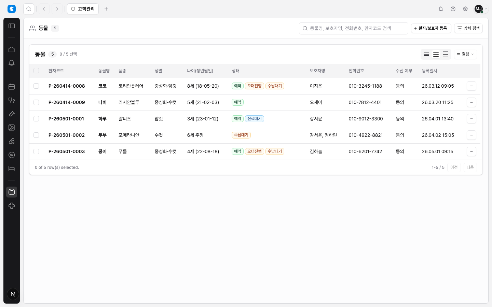

CLAiR Table Header Interaction Research
CLAiR 테이블의 정렬, 필터, 컬럼 메뉴, 리사이즈 affordance를 조사했다. 결론은 role-based opt-in이다. 모든 헤더를 무조건 인터랙티브하게 만들지 않고, table kind와 column role에 따라 명시적으로 켠다. 단, 리사이즈가 켜진 테이블에서는 checkbox/action을 제외한 모든 data column에 같은 resize hit zone을 제공한다.
CLAiR Evidence


Lazyweb References



Official References
- MUI X sorting, filtering, column dimensions, column menu
- AG Grid column sizing, column menu, row sorting
- TanStack column definitions, sorting, filtering, column sizing
- shadcn/ui Data Table
Recommendation
- 공유
EmrTableHeaderCell을 만들고 column role로 affordance를 제한한다. - 정렬/필터/메뉴/리사이즈는 별도 state와 별도 icon/trigger를 갖는다.
- 리사이즈는 header separator edge hit zone으로 처리하고 영구 grip icon은 피한다.
- toolbar filter는 업무 단위 필터, column filter는 field-specific advanced filter로 분리한다.
- clinical-review table에는 column menu를 기본 노출하지 않는다.